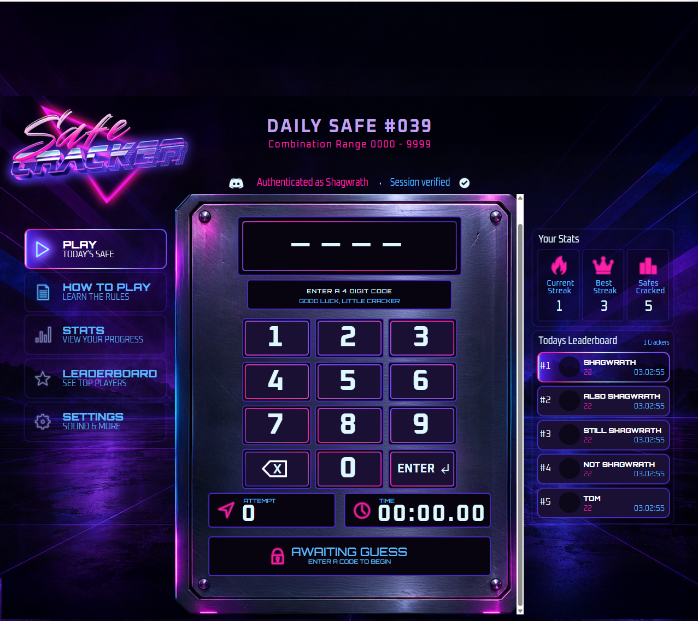

Okay, that title is maybe a little dramatic.
But only a little.
Safe Cracker has been live for a bit now, and Phase 1 did exactly what I needed it to do. The game worked. Discord authentication worked. Scores worked. Streaks worked. The leaderboard worked. The database was encrypted. Discord verified the Activity.
It was done.
Which of course meant it was finally time to ruin everything by making it prettier.
I had already mocked up a much more complete UI in Photoshop. Neon purple, pink and blue. Big ridiculous chrome Safe Cracker logo. Navigation on the left. Stats and a live leaderboard on the right. The actual safe controls in the middle.
Basically the version that had been living in my head while I was staring at the very functional but extremely programmer-looking Phase 1 interface.
The obvious way to build this would have been:
- Make the design in Photoshop.
- Export a bunch of PNGs.
- Manually recreate all the positions, sizes, fonts, buttons and states in Svelte.
- Spend the rest of my natural life nudging things by 3 pixels.
No thank you.
So instead I decided Photoshop should be the source of truth.
That went about as reasonably as you would expect.
The idea was pretty simple.
I started naming layers and folders in Photoshop with little semantic tags:
@shared
@screen play
@component leaderboard
@button play
@state hover
@asset base
@text player name
@slot avatarThe basic rule is:
A tagged layer is one UI element.
A tagged folder is also one UI element, except everything inside it gets flattened together.
So I can have something like:
@asset base
├── Rectangle 1
├── Gradient Fill 4
├── Glow
├── Shadow
└── Whatever Other Photoshop Nonsenseand the exporter does not care what any of those internal layers are called.
They are just the ingredients that make the one thing called base.
Structural folders create namespaces, so this is completely fine:
@component rank 1
├── @text player name
├── @text attempts
└── @text time
@component rank 2
├── @text player name
├── @text attempts
└── @text timeThe names only have to be unique inside their own component.
If I accidentally do this:
@component rank 1
├── @asset base
└── @asset basethe exporter throws an error instead of silently inventing something stupid like base-2.
That already made the Photoshop file feel less like a pile of art layers and more like actual UI source code.
Then I made the exporter.
The Photoshop script walks the PSD, validates the tagged structure, exports assets, reads text properties, and generates a manifest describing everything.
That manifest includes things like:
position
size
opacity
font
font size
font weight
tracking
alignment
text transforms
capitalization
button states
runtime slotsThe importer then takes that Photoshop export and turns it into something the Svelte Activity can consume.
The workflow is now basically:
Photoshop
→ Export
→ Import
→ Ctrl + F5
→ Stare at localhostWhich is already much better than manually rebuilding the whole damn screen every time I move something.
The first screen I used as a guinea pig was the Connecting screen.
It seemed like the safest choice because it only has a few elements:
logo
spinner
CONNECTING header
random help text
copyright
backgroundThe first export actually worked surprisingly well.
Then the text started doing weird shit.
Some text wrapped when it absolutely should not wrap.
Some text sat too low.
Some text was too far left.
Photoshop said one copyright layer was 75 pixels tall even though it clearly was not.
That turned out to be because Photoshop stores the original text size and then applies a transform to the layer.
So the exporter had to learn the difference between:
font sizeand:
font size after Photoshop has transformed the layerCool.
Then point text turned into another adventure.
HTML likes to think about text as boxes.
Photoshop point text is positioned more like:
anchor + baselineThose are not the same thing.
The first renderer was using the visible text bounds, which got us very close, but “very close” is actually worse once the rest of the UI looks correct because now your eye can immediately tell that every number is two pixels too high and three pixels too far left.
So eventually the browser renderer started using Photoshop’s actual point-text anchor and baseline coordinates.
That fixed it.
Then capitalization broke.
My Photoshop layer visibly said:
ENTERbut the exported text said:
enterTurns out Photoshop can store “All Caps” as a character style without actually changing the underlying string.
Of course it can.
So now the exporter also captures Photoshop capitalization settings.
Then the first-place leaderboard background exported as a gigantic white rectangle.
That one was fun.
The PSD looked correct.
The browser was displaying the exported PNG correctly.
The PNG itself was wrong.
Eventually I figured out that the exporter was copying a live Photoshop gradient/effect into a temporary document and then cropping the document.
Photoshop helpfully recalculated the live gradient after the canvas changed size.
The fix was to rasterize/freeze the appearance while it was still sitting on the original 1440×1080 canvas, and only then crop it.
Now the exported PNG actually looks like the PSD.
This is why software development is good for you.
It builds character.
Somewhere along the way I also had to solve the fact that the Photoshop UI is designed at:
1440 × 1080which is 4:3, while a Discord Activity window can be basically whatever stupid shape somebody decides to make it.
Cropping the UI was unacceptable because it could cut off buttons.
Stretching it was obviously unacceptable.
So the actual UI now stays on a perfect 1440×1080 virtual stage and scales uniformly.
The decorative background fills the rest of the viewport behind it.
That works really well, although I am not completely in love with the current duplicated-background treatment.
Future problem.
I finally moved onto the actual Play screen.
That was the real test.
The new Play screen has:
combination display
help panel
0–9 keypad
backspace
enter
attempt counter
timer
feedback panelplus the shared UI surrounding it:
navigation
current streak
best streak
safes cracked
today's leaderboard
Discord authentication statusI exported it.
Imported it.
Loaded localhost.
And…
It looked like the Photoshop file.
Like, actually looked like it.
Not “eh, close enough.”
Not “I can fix the spacing later.”
The thing was basically sitting there in the browser where I had drawn it in Photoshop.
Even better, the new keypad is not just artwork.
The Photoshop buttons are hooked back into the real game logic.
Clicking:
7still calls the real digit function.
Backspace still calls backspace.
Enter still submits the guess.
The displayed combination is the real guess state.
Attempts are the real attempt count.
The timer is the real timer.
Feedback is still HIGHER, LOWER, SAFE CRACKED, ERROR, whatever.
So the visual redesign did not replace the game.
It became a skin over the game that Photoshop controls.
That is exactly what I wanted.
Then I pushed it to production.
The right side of the interface now loads the real player’s:
Current Streak
Best Streak
Safes Crackedand the real daily leaderboard as soon as the Activity loads.
The leaderboard refreshes while the Activity is open, and it refreshes immediately again when somebody cracks the safe.
That means the old Phase 1 behavior where the entire screen expanded after you won to reveal your stats and the leaderboard is going away.
Those things already live on the screen now.
They just update.
Much cleaner.
For now the navigation is intentionally limited.
Play ACTIVE
How to Play DISABLED
Stats DISABLED
Leaderboard DISABLED
Settings DISABLEDThe independent Stats, Leaderboard and Settings screens can come later.
I am not letting myself turn this into another “everything has to exist before anything ships” project.
How to Play is next because that one is actually useful.
There are still a couple tiny things annoying me.
Some of the stats text is getting horizontally compressed more than I like.
The browser’s font rendering is just slightly different from Photoshop in a few places.
And I want a better solution for the extra background space than simply filling it with another copy of the background image.
That can all be V3.
The important part is that this ridiculous pipeline actually works.
I can design Safe Cracker in Photoshop.
I can label the pieces that matter.
I can export it.
The game reads the layout.
The real controls and data get injected back into it.
And the result runs inside Discord.
Which means I have somehow turned Photoshop into a UI editor for a Svelte Discord Activity.
I absolutely did not need to do that.
Worth it.
Next: Build the How to Play screen, finish the cracked/result state, and keep making the Photoshop pipeline less cursed.